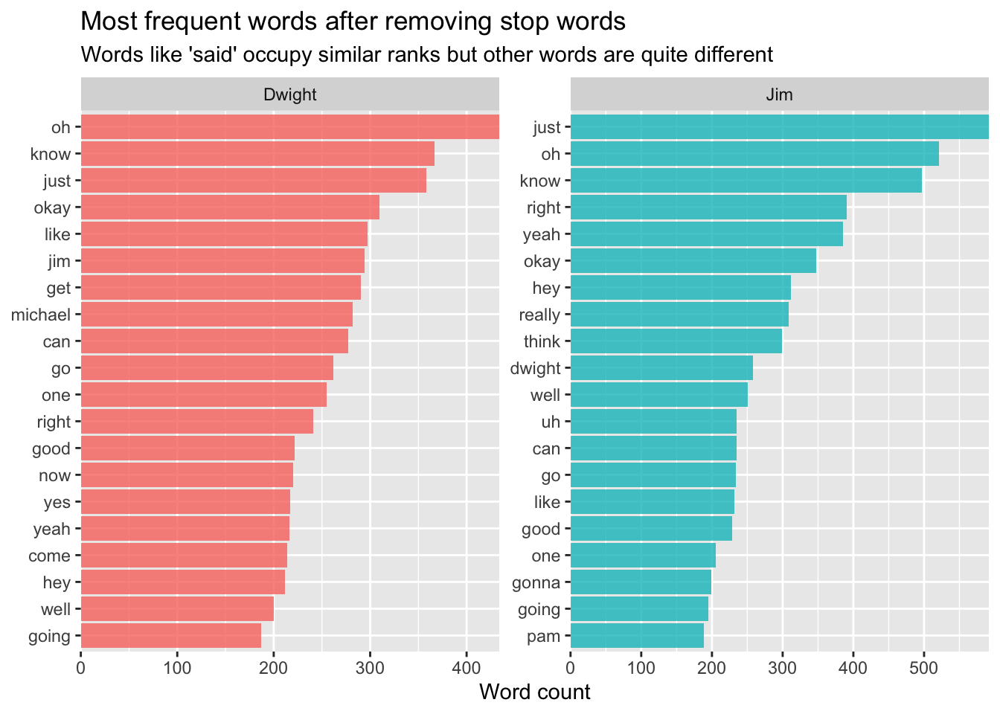
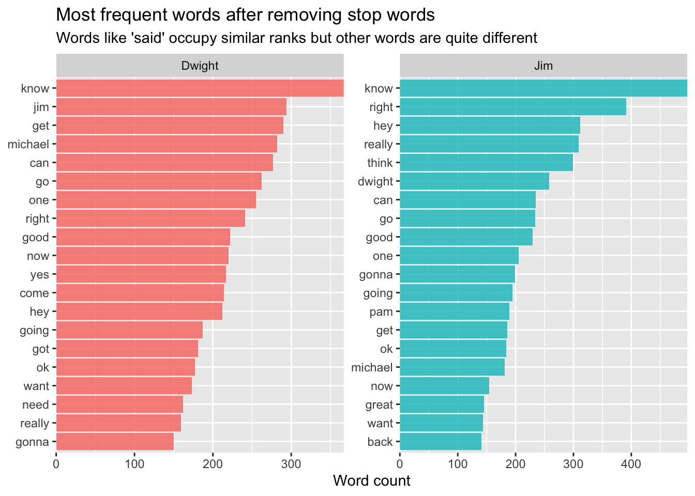

# A tibble: 55,130 × 7
season episode episode_name director writer character text
<dbl> <dbl> <chr> <chr> <chr> <chr> <chr>
1 1 1 Pilot Ken Kwapis Ricky Gervais;Stephen… Michael All …
2 1 1 Pilot Ken Kwapis Ricky Gervais;Stephen… Jim Oh, …
3 1 1 Pilot Ken Kwapis Ricky Gervais;Stephen… Michael So y…
4 1 1 Pilot Ken Kwapis Ricky Gervais;Stephen… Jim Actu…
5 1 1 Pilot Ken Kwapis Ricky Gervais;Stephen… Michael All …
6 1 1 Pilot Ken Kwapis Ricky Gervais;Stephen… Michael Yes,…
7 1 1 Pilot Ken Kwapis Ricky Gervais;Stephen… Michael I've…
8 1 1 Pilot Ken Kwapis Ricky Gervais;Stephen… Pam Well…
9 1 1 Pilot Ken Kwapis Ricky Gervais;Stephen… Michael If y…
10 1 1 Pilot Ken Kwapis Ricky Gervais;Stephen… Pam What?
# … with 55,120 more rows
In Julia’s article she adds a document row without really highlighting why… I think it’s actually crucial, so let’s do that:
For the moment we only care about Jim and Dwight, so let’s extract out the unigrams for each speaker using unnest_tokens() and throw away the stop words:
I’m going to duplicate one of Julia’s charts so we can compare the most common words used by Dwight and Jim.
Code
jim_dwight_unigrams_before_product_recall %>%count(character, word, sort =TRUE) %>%group_by(character) %>%top_n(20) %>%ungroup() %>%ggplot(aes(reorder_within(word, n, character), n,fill = character )) +geom_col(alpha =0.8, show.legend =FALSE) +scale_x_reordered() +coord_flip() +facet_wrap(~character, scales ="free") +scale_y_continuous(expand =c(0, 0)) +labs(x =NULL, y ="Word count",title ="Most frequent words after removing stop words",subtitle ="Words like 'said' occupy similar ranks but other words are quite different" )
Selecting by n

These lists are very similar to one another. That’s because the stop words in the {tidytext} package are collated from prose, and not from spoken word - or dialogue.
jim_dwight_unigrams_before_product_recall %>%count(character, word, sort =TRUE) %>%group_by(character) %>%top_n(20) %>%ungroup() %>%ggplot(aes(reorder_within(word, n, character), n,fill = character )) +geom_col(alpha =0.8, show.legend =FALSE) +scale_x_reordered() +coord_flip() +facet_wrap(~character, scales ="free") +scale_y_continuous(expand =c(0, 0)) +labs(x =NULL, y ="Word count",title ="Most frequent words after removing stop words",subtitle ="Words like 'said' occupy similar ranks but other words are quite different" )
Selecting by n

Building our model
The {rsample} package is designe for splitting up data into training and test sets.
Code
library("rsample")
But we’re going to be unfair and split our data as follows: